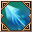
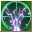
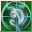
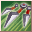
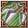
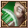

Loading...
Items
Weapons
Sword
Hammer
Axe
Two-Handed Sword
Two-Handed Hammer
Two-Handed Axe
Bow
Firearm
Relic
Staff
Shield
One-Handed Mecha Weapon
Two-Handed Mecha Weapon
Artillery
Arrows
Shells
Crystal
Katana
Armor
Head
Body
Legs
Hands
Feets
Back
Accesory
Backpack
Special Equipment
One-Handed Equipment
Two-Handed Equipment
Headgear
Back
Body
Talents Items
Talent Card
Talent Plane
Talent Fragment
Talent Skill
Power Stone
Sprite
Sprite
Jug Monster
Backpack
Sprite Island Formule
Sprite Island Breeding
Sprite Island Recipes
Sprite Island Buildings
Sprite Customes
Sprite Workbench
Sprite Emblem
Skill Book(Novice)
Skill Book(Intermediate)
Skill Book(Advanced)
Supplies
Mining
Foraging
Hunting
Crafting Ingredients
Piedras de Equipo
Gem Stone
Rune Stone
Resonance Stone
Nucleus
Mounts
Thrones
Comb Talents
Berserker
Paladin
Ranger
Assassin
Cleric
Sage
Wizard
Necromancer
Enginer
Demolitionist
Void Runner
Time Traveler
Quest
Titles
Skills
Berserker
Paladin
Ranger
Assassin
Cleric
Sage
Wizard
Necromancer
Enginer
Demolitionist
Void Runner
Time Traveler
Sprites
Portuguese
English
Spanish
Portuguese
French
Suggestions
Contact Us
Credits
Make Alchemy
F.A.Q
Time
00
:
00
:
00
Emissaries Timer
<Avatar do Emissário>Anunciador da Luxúria
Floresta Antiga (X:290, Y:370) Monday 20:35
<Emissário Lunático> Loucura da Luxúria
Vale dos Cavaleiros (X:510.53, Y:619.852) Monday 20:35
<Emissário Pesadelo> Ladona Voraz
Arena de Combate do território ilusório (X:134.088, Y:347.754) Monday 15:30
Emissário Antigo Justiça
Vale dos Espíritos (X:439.138, Y:559.115) Monday 20:30
<Emissário Ilusionista> Alpha Yen
Aldeia Aura Ilusória (X:639.151, Y:232.943) Monday 15:30
<Emissário Ilusionista> Iota Zhong
Passagem da Chama de Fogo Congelante (X:534.548, Y:578.733) Monday 20:30
Skills Assassin
Skills
Passive Skills
Name
Level
Effect
Tiro Força de Pedra 1
Skills
×
Tiro Força de Pedra 1
Tiro Força de Pedra 2
Tiro Força de Pedra 3
Tiro Força de Pedra 4
Ataque Acorrentador 1
Ataque Acorrentador 2
Pancada das Correntes 1
Pancada das Correntes 2
6
Info
Tiro Poderoso 1
Skills
×
Tiro Poderoso 1
Tiro Poderoso 2
Tiro Poderoso 3
Tiro Poderoso 4
Tiro Poderoso 5
Tiro Forte 6
Tiro Rastreador 1
Tiro Rastreador 2
Tiro Poderoso Perseguidor 1
Tiro Poderoso Perseguidor 2
6
Info
Tiro Chocante 1
Skills
×
Tiro Chocante 1
Tiro Chocante 2
Tiro Chocante 3
Tiro Chocante 4
Tiro Chocante 5
Tiro Chocante 6
Tiro Poderoso 1
Tiro Poderoso 2
Tiro Poderoso Duro 1

Tiro Poderoso Duro 2
6
Info
Reflexos Relâmpagos 1
Skills
×
Reflexos Relâmpagos 1
Reflexos Relâmpagos 2
Reflexos Relâmpagos 3
Reflexos de Trovão 1
8
Info
Tiro Presa Dupla 1
Skills
×
Tiro Presa Dupla 1
Tiro Presa Dupla 2
Tiro Presa Dupla 3
Tiro Presa Dupla 4
Flecha de Três Tiros 1
Tiro Triplo 2
Tiro Triplo com a Besta 1
Tiro Triplo com a Besta 2
16
Info
Tiro Corta Armadura 1
Skills
×
Tiro Corta Armadura 1
Tiro Corta Armadura 2
Tiro Corta Armadura 3
Tiro Destruidor de Armadura 1
Tiro Destruidor de Armadura 2
Tiro Poderoso Perfurador de Armadura 1
Tiro Poderoso Perfurador de Armadura 2
16
Info
Blinding Blade 1
Skills
×
Blinding Blade 1
Blinding Blade 2
Blinding Blade 3
Blinding Blade 4
31
Info
Predador Silencioso 1
Skills
×
Predador Silencioso 1
Predador Silencioso 2
Predador Silencioso 3
Predador Silencioso 4
Alto Nível de Discrição 1
Predador Silencioso 2
31
Info
Ataque Demônio Sombrio 1
Skills
×
Ataque Demônio Sombrio 1
Ataque Demônio Sombrio 2
Ataque Demônio Sombrio 3
Ataque Demônio Sombrio 4
Ataque Demônio Sombrio 5
Ataque Demônio Sombrio 6
Ataque Demônio Sombrio 7
Ataque Demônio Sombrio 8
Ataque Demônio Sombrio 9
Emboscada Fatal 1
Emboscada Fatal 2
Emboscada Fatal 3
Emboscada Fatal 4
Emboscada Fatal 5
Ataque do Estripador 1
Ataque do Estripador 2
Ataque do Estripador 3
Ataque do Estripador 4
31
Info
Velocidade Demoníaca 1
Skills
×
Velocidade Demoníaca 1
Velocidade Demoníaca 2
Velocidade Demoníaca 3
Velocidade Demoníaca 4
Velocidade Demoníaca 5
Reação Veloz 1
Reação Veloz 2
31
Info
Beijo da Morte 1
Skills
×
Beijo da Morte 1
Beijo da Morte 2
Beijo da Morte 3
Beijo da Morte 4
Beijo da Morte 5
Beijo da Morte 6
Beijo da Morte 7
Beijo da Morte 8
Beijo da Morte 9
Beijo da Morte 1
Beijo da Morte 2
Beijo da Morte 3
Beijo da Morte 4
Beijo de Azrael 5
Ataque Venenoso 1
Ataque Venenoso 2
Ataque Venenoso 3
Ataque Venenoso 4
31
Info
Golpe de Graça 1
Skills
×
Golpe de Graça 1
Golpe de Graça 2
Golpe de Graça 3
Golpe de Graça 4
Golpe de Graça 5
Golpe de Graça 6
Golpe de Graça 7
Golpe de Graça 8
Golpe de Graça 9
Golpe Letal 1
Golpe Letal 2
Golpe Letal 3
Golpe Mortal 4
Golpe Mortal 5
Ataque Letal 1
Ataque Letal 2
Ataque Letal 3<br>
Ataque Letal 4
31
Info
Espinho Sombrio Borrado 1
Skills
×
Espinho Sombrio Borrado 1
Espinho Sombrio Borrado 2
Espinho Sombrio Borrado 3
Espinho Sombrio Borrado 4
Espinho Sombrio Borrado 5
Espinho Sombrio Borrado 6
Espinho Sombrio 1
Espinho Sombrio 2
Espinho Sombrio 3
Apunhalada das Sombras 1
Apunhalada das Sombras 2
Apunhalada das Sombras 3
32
Info
Ira Viciosa 1
Skills
×
Ira Viciosa 1
Ira Viciosa 2
Ira Viciosa 3
Ira Viciosa 4
Ira Viciosa 5
Ira Viciosa 6
Ira Viciosa 7
Ira Viciosa 8
Ira Viciosa 9
Picada Perversa 1
Picada Perversa 2
Picada Perversa 3
Picada Perversa 4
Picada Perversa 5
Toxina Nervosa 1
Toxina Nervosa 2
32
Info

Tiro Violento 1
Skills
×
Tiro Violento 1
Tiro Violento 2
Tiro Violento 3
Tiro Violento 4
Tiro Violento 5
Tiro Violento 6
Tiro de Franco-Atirador 1
Tiro de Franco-Atirador 2
Tiro de Franco-Atirador 3
Tiro Poderoso do Atirador de Elite 1
Tiro Poderoso do Atirador de Elite 2
Tiro Poderoso do Atirador de Elite 3
32
Info
Limpador de Relógio 1
Skills
×
Limpador de Relógio 1
Limpador de Relógio 2
Limpador de Relógio 3
Limpador de Relógio 4
Limpador de Relógio 5
Limpador de Relógio 6
Limpador de Relógio Melhorado 1
Limpador de Relógio Melhorado 2
Tanquinho Profundo 3
Divisão do Tempo 1
Divisão do Tempo 2
Divisão do Tempo 3
34
Info

Sonhador Doce 1
Skills
×
Sonhador Doce 1
Sonhador Doce 2
Sonhador Doce 3
Sonhador Doce 4
Sonhador Doce 5
Sonhador Doce Aperfeiçoado 1
Sonhador Doce Aperfeiçoado 2
Boa Noite Cinderela Aperfeiçoado 3
Tiro Poderoso de Knock-out 1
Tiro Poderoso de Nocaute 2
36
Info
Emboscada Breve 1
Skills
×
Emboscada Breve 1
Emboscada Breve 2
Emboscada Breve 3
Emboscada Breve 4
Emboscada Breve 5
Emboscada Breve 6
Emboscada Breve 7
Emboscada Total 1
Emboscada Total 2
Emboscada Total 3
Emboscada Total 4
Emboscada Total 5
Libertação 1
Libertação 2
Libertação 3<br>
Libertação 4
40
Info
Sombra Escorregadia 1
Skills
×
Sombra Escorregadia 1
Sombra Escorregadia 2
Sombra Escorregadia 3
Sombra Escorregadia4
Alta Sombra Escorregadia 1
40
Info
Investida de Batalha 1
Skills
×
Investida de Batalha 1
Investida de Batalha 2
Investida de Batalha 3
Investida de Batalha 4
Investida de Batalha 5
Investida de Batalha 6
Investida de Batalha 7
61
Info
Corda de Presunto 1
Skills
×
Corda de Presunto 1
Corda de Presunto 2
Corda de Presunto 2
Corda de Presunto 4
Corda de Presunto 5
Ataque Paralisante Rápido 1
Ataque Paralisante Rápido 2
61
Info

Adaga Envenenada 1
Skills
×
Adaga Envenenada 1
Adaga Envenenada 2
Adaga Envenenada 3
Adaga Envenenada 4
Adaga Envenenada 5
Adaga Envenenada 6
Adaga Envenenada 7

Adaga Envenenada 8
Adaga Envenenada 9
66
Info
Liberação Potencial
Skills
×
Liberação Potencial
66
Info
Escapou sem deixar rastros
Skills
×
Escapou sem deixar rastros
66
Info
Capa Fantasmagórica
Skills
×
Capa Fantasmagórica
66
Info
Sexto Sentido 1
Skills
×
Sexto Sentido 1
Sexto Sentido 2
Sexto Sentido 3
Sexto Sentido 4
Sexto Sentido 5
Sexto Sentido 6
Sexto Sentido 7
67
Info
Estrela Ninja 1
Skills
×
Estrela Ninja 1
Estrela Ninja 2
Estrela Ninja 3
Estrela Ninja 4
Estrela Ninja 5
68
Info
Ataque Envenenado 1
Skills
×
Ataque Envenenado 1
Ataque Envenenado 2
Ataque Envenenado 3
Ataque Envenenado 4
69
Info
Máquina de Ataque 1
Skills
×
Máquina de Ataque 1
Máquina de Ataque 2
Máquina de Ataque 3
Máquina de Ataque 4
Máquina de Ataque 5
Máquina de Ataque 6
Máquina de Ataque 7
70
Info
Golpe Garra de Urso
Skills
×
Golpe Garra de Urso
84
Info
Ataque Furtivo 1
Skills
×
Ataque Furtivo 1
Ataque Furtivo 2
Ataque Furtivo 3
Ataque Furtivo 4
86
Info
Infiltração de Toxina Final 1
Skills
×
Infiltração de Toxina Final 1
Infiltração de Toxina Final 2
Infiltração de Toxina Final 3
Propagação de Veneno Final 4
Propagação de Veneno Final 5
86
Info
Lâmina Tóxica 1
Skills
×
Lâmina Tóxica 1
Lâmina Tóxica 2
86
Info
Sombra Dupla
Skills
×
Sombra Dupla
91
Info
Golpe Fatal
Skills
×
Golpe Fatal
91
Info
Facada Sombria
Skills
×
Facada Sombria
91
Info

Facada Sombria
Skills
×
Facada Sombria
91
Info
Alma do Guerreiro das Sombras
Skills
×
Alma do Guerreiro das Sombras
91
Info
Name
Level
Effect
Tiro Força de Pedra Aperfeiçoado 1
Skills
×
Tiro Força de Pedra Aperfeiçoado 1
Tiro Força de Pedra Aperfeiçoado 2
Tiro Força de Pedra Aperfeiçoado 3
Tiro Força de Pedra Aperfeiçoado 4
Tiro Força de Pedra Aperfeiçoado 5
6
Info
Alma Arrebentada a
Skills
×
Alma Arrebentada a
Alma Arrebentada ß
Alma Arrebentada ß
Alma Arrebentada d
6
Info
Opportunism 1
Skills
×
Opportunism 1
Opportunism 2
Opportunism 3
Opportunism 3
Opportunism 4
Opportunism 4
Opportunism 5
Opportunism 5
Opportunism 6
Opportunism 6
6
Info
Atirador Perito
Skills
×
Atirador Perito
6
Info
Tiro Poderoso Aperfeiçoado 1
Skills
×
Tiro Poderoso Aperfeiçoado 1
Tiro Poderoso Aperfeiçoado 2
Tiro Poderoso Aperfeiçoado 3
Tiro Poderoso Aperfeiçoado 4
Tiro Poderoso Aperfeiçoado 5
6
Info
Tiro Chocante Aperfeiçoado 1
Skills
×
Tiro Chocante Aperfeiçoado 1
Tiro Chocante Aperfeiçoado 2
Tiro Chocante Aperfeiçoado 3
Tiro Chocante Aperfeiçoado 4
Tiro Chocante Aperfeiçoado 5
6
Info
Reflexos de Relâmpago Aperfeiçoados 1
Skills
×
Reflexos de Relâmpago Aperfeiçoados 1
Reflexos de Relâmpago Aperfeiçoados 2
Reflexos de Relâmpago Aperfeiçoados 3
Reflexos de Relâmpago Aperfeiçoados 4
Reflexos de Relâmpago Aperfeiçoados 5
8
Info
Tiro Presa Dupla Aperfeiçoado 1
Skills
×
Tiro Presa Dupla Aperfeiçoado 1
Tiro Presa Dupla Aperfeiçoado 2
Tiro Presa Dupla Aperfeiçoado 3
Tiro Presa Dupla Aperfeiçoado 4
Tiro Presa Dupla Aperfeiçoado 5
16
Info
Luta com Dual Armas
Skills
×
Luta com Dual Armas
16
Info
Tiro Fantasma Aperfeiçoado 1
Skills
×
Tiro Fantasma Aperfeiçoado 1
Tiro Fantasma Aperfeiçoado 2
Tiro Fantasma Aperfeiçoado 3
Tiro Fantasma Aperfeiçoado 4
Tiro Fantasma Aperfeiçoado 5
31
Info
Beijo do Ceifador de Almas Aperfeiçoado 1
Skills
×
Beijo do Ceifador de Almas Aperfeiçoado 1
Beijo do Ceifador de Almas Aperfeiçoado 2
Beijo do Ceifador de Almas Aperfeiçoado 3
Beijo do Ceifador de Almas Aperfeiçoado 4
Beijo do Ceifador de Almas Aperfeiçoado 5
31
Info
Golpe de Misericórdia Aperfeiçoado 1
Skills
×
Golpe de Misericórdia Aperfeiçoado 1
Golpe de Misericórdia Aperfeiçoado 2
Golpe de Misericórdia Aperfeiçoado 3
Golpe Mortal Aperfeiçoado 4
Golpe Mortal Aperfeiçoado 5
31
Info
Espinho Sombrio Borrado Aperfeiçoado 1
Skills
×
Espinho Sombrio Borrado Aperfeiçoado 1
Espinho Sombrio Borrado Aperfeiçoado 2
Espinho Sombrio Borrado Aperfeiçoado 3
Espinho Sombrio Borrado Aperfeiçoado 4
Espinho Sombrio Borrado Aperfeiçoado 5
32
Info
Limpador de Relógio Aperfeiçoado 1
Skills
×
Limpador de Relógio Aperfeiçoado 1
Limpador de Relógio Aperfeiçoado 2
Limpador de Relógio Aperfeiçoado 3
Limpador de Relógio Aperfeiçoado 4
Limpador de Relógio Aperfeiçoado 5
34
Info
Emboscada Fatal Melhorada 1
Skills
×
Emboscada Fatal Melhorada 1
Emboscada Fatal Melhorada 2
Emboscada Fatal Melhorada 3
Emboscada Fatal Melhorada 4
Emboscada Fatal Melhorada 5
66
Info
Beijo da Morte Aperfeiçoado 1
Skills
×
Beijo da Morte Aperfeiçoado 1
Beijo da Morte Aperfeiçoado 2
Beijo da Morte Aperfeiçoado 3
Beijo da Morte Aperfeiçoado 4
Tiro de Veneno Aperfeiçoado 5
66
Info
Golpe Letal Aperfeiçoado 1
Skills
×
Golpe Letal Aperfeiçoado 1
Golpe Letal Aperfeiçoado 2
Golpe Letal Aperfeiçoado 3
Ataque Mortal Aperfeiçoado 4
Ataque Mortal Aperfeiçoado 5
66
Info
Insensibilidade 1
Skills
×
Insensibilidade 1
Insensibilidade 2
Insensibilidade 3
Insensibilidade 4
Insensibilidade 5
Insensibilidade 6
66
Info
Forma de Sombra 1
Skills
×
Forma de Sombra 1
Forma de Sombra 2
Forma de Sombra 3
66
Info
Sede de Sangue 1
Skills
×
Sede de Sangue 1
Sede de Sangue 2
Sede de Sangue 3
66
Info
Tiros Triplos Aperfeiçoados 1
Skills
×
Tiros Triplos Aperfeiçoados 1
Tiros Triplos Aperfeiçoados 2
Tiros Triplos Aperfeiçoados 3
Tiros Triplos Aperfeiçoados 4
Tiros Triplos Aperfeiçoados 5
68
Info
Ataque Acorrentador Aperfeiçoado 1
Skills
×
Ataque Acorrentador Aperfeiçoado 1
Ataque Acorrentador Aperfeiçoado 2
Ataque Acorrentador Aperfeiçoado 3
Ataque Acorrentador Aperfeiçoado 4
Ataque Acorrentador Aperfeiçoado 5
68
Info
Espinho Sombrio Aperfeiçoado 1
Skills
×
Espinho Sombrio Aperfeiçoado 1
Espinho Sombrio Aperfeiçoado 2
Espinho Sombrio Aperfeiçoado 3
Espinho Sombrio Aperfeiçoado 4
Espinho Sombrio Aperfeiçoado 5
68
Info
Tiro Rastreador Aperfeiçoado 1
Skills
×
Tiro Rastreador Aperfeiçoado 1
Tiro Rastreador Aperfeiçoado 2
Tiro Rastreador Aperfeiçoado 3
Tiro Rastreador Aperfeiçoado 4
Tiro Rastreador Aperfeiçoado 5
68
Info
Tiro Poderoso Aperfeiçoado 1
Skills
×
Tiro Poderoso Aperfeiçoado 1
Tiro Poderoso Aperfeiçoado 2
Tiro Poderoso Aperfeiçoado 3
Tiro Poderoso Aperfeiçoado 4
Tiro Poderoso Aperfeiçoado 5
68
Info
Limpador de Relógio Superaperfeiçoado 1
Skills
×
Limpador de Relógio Superaperfeiçoado 1
Limpador de Relógio Superaperfeiçoado 2
Limpador de Relógio Superaperfeiçoado 3
Limpador de Relógio Superaperfeiçoado 4
Limpador de Relógio Superaperfeiçoado 5
70
Info
Reflexos de Trovão Aperfeiçoados 1
Skills
×
Reflexos de Trovão Aperfeiçoados 1
Reflexos de Trovão Aperfeiçoados 2
Reflexos de Trovão Aperfeiçoados 3
Reflexos de Trovão Aperfeiçoados 4
Reflexos de Trovão Aperfeiçoados 5
72
Info
Alma Ágil 1
Skills
×
Alma Ágil 1
Alma Ágil 2
Alma Ágil 3
Alma Ágil 4
Alma Ágil 5
86
Info
Precisão Diabólica 1
Skills
×
Precisão Diabólica 1
Precisão Diabólica 2
86
Info
Decepção 1
Skills
×
Decepção 1
91
Info
Credits
×
Developers:
Kougami
EX GS Angelique
Collaborators:
EX GS Roshi
EX GS Marchel
Contact Us
×
Contact emails
admin@grandfantasia-db.com